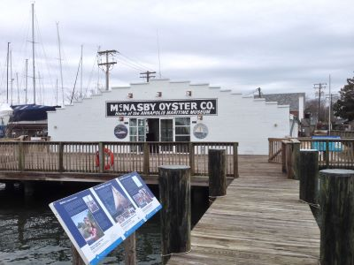
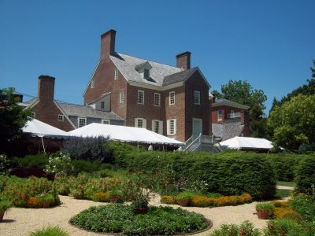
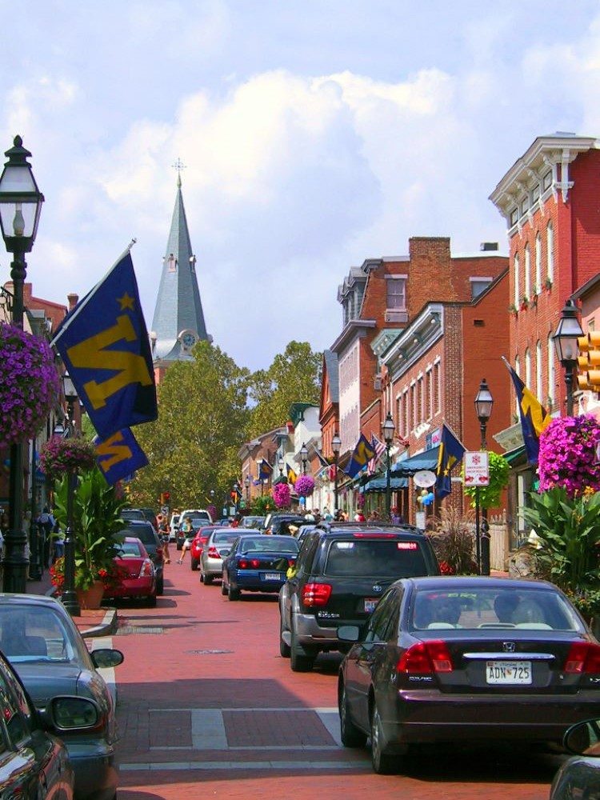
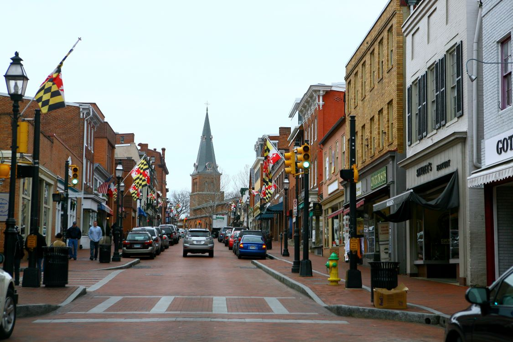

Annapolis Travel Guide
Capital of Maryland, is a charming city located on the Chesapeake Bay, it offers a picturesque waterfront setting with historic architecture and a lively downtown area. Visitors can explore the United States Naval Academy, stroll along the historic district's cobblestone streets, and enjoy fresh seafood at local restaurants.
Places to See in Annapolis
Des Moines Guy, CC BY-SA 3.0, via Wikimedia Commons; Image Size Adjusted

Annapolis City Dock
Scenic waterfront promenade featuring boat watching, boutique shopping, and seasonal festivals along a historic harbor inlet.
PointsofNoReturn, CC BY-SA 4.0, via Wikimedia Commons; Cropped and Image Size Adjusted

Annapolis Historic Main Street
Bustling pedestrian-friendly corridor lined with colonial architecture, boutique shops, restaurants, and waterfront views.

Danksergeant15, CC BY-SA 4.0, via Wikimedia Commons; Image Size Adjusted

Annapolis Maritime Museum and Park
Waterfront museum and nature park offering exhibits on Chesapeake Bay ecology, maritime heritage, and historic skipjack cruises.
PointsofNoReturn, CC BY-SA 4.0, via Wikimedia Commons; Cropped and Image Size Adjusted
Banneker-Douglass-Tubman Museum
Historic church-turned-museum showcasing Maryland’s African American heritage through exhibitions, archives, and cultural programming.
Dsmspence, CC BY-SA 3.0, via Wikimedia Commons; Image Size Adjusted

Government House of Maryland
Georgian-style mansion serving as the official residence of Maryland’s governor, featuring historic furnishings and ceremonial rooms.
Dsmspence, CC BY-SA 3.0, via Wikimedia Commons; Image Size Adjusted
Hammond-Harwood House
Georgian-style mansion museum featuring exceptional decorative arts collections, period furnishings, guided tours, and architectural craftsmanship that exemplifies early American design and culture.
PointsofNoReturn, CC BY-SA 4.0, via Wikimedia Commons; Cropped and Image Size Adjusted
Kunta Kinte - Alex Haley Memorial
Outdoor bronze sculpture and engraved storytelling wall honoring the legacy of an enslaved African and the author who traced his lineage.
PointsofNoReturn, CC BY-SA 4.0, via Wikimedia Commons; Cropped and Image Size Adjusted
Maryland State House
Historic capitol building featuring colonial architecture, legislative chambers, and exhibits on Maryland and U.S. history.
PointsofNoReturn, CC BY-SA 4.0, via Wikimedia Commons; Cropped and Image Size Adjusted
Museum of Historic Annapolis
Interactive history museum featuring artifacts, exhibitions, films, and educational displays that explore more than four centuries of political, cultural, and social history.
PointsofNoReturn, CC BY-SA 4.0, via Wikimedia Commons; Cropped and Image Size Adjusted
St. Anne's Parish
Historic Episcopal church offering worship services, concerts, and community events in a landmark circular setting.
PointsofNoReturn, CC BY-SA 4.0, via Wikimedia Commons; Cropped and Image Size Adjusted
St. John's College
Historic liberal arts college known for its Great Books curriculum and scenic campus overlooking College Creek.
PointsofNoReturn, CC BY-SA 4.0, via Wikimedia Commons; Cropped and Image Size Adjusted
United States Naval Academy
Prestigious military college offering public tours, historic landmarks, and scenic waterfront views on a secure campus.
PointsofNoReturn, CC BY-SA 4.0, via Wikimedia Commons; Cropped and Image Size Adjusted
U.S. Naval Academy Museum
Two-story maritime museum showcasing naval history, ship models, and interactive exhibits within the U.S. Naval Academy campus.

Jeff P from Berkeley, CA, USA, CC BY 2.0, via Wikimedia Commons; Image Size Adjusted
.jpg){kind=link}
William Paca House and Garden
18th-century Georgian mansion and two-acre English garden offering guided tours and a glimpse into colonial life.
Overview
Annapolis is the capital of Maryland, a colonial port city of about 40,000 people on the Severn River where it meets the Chesapeake Bay, about 30 miles from both Washington, D.C. and Baltimore. It is famous as the home of the U.S. Naval Academy, as the "Sailing Capital of the World" and for its well-preserved historic district, which has one of the largest collections of 18th-century brick buildings in the country. The Maryland State House, the oldest state capitol still used for lawmaking, sits at the top of a hill with streets radiating out to the harbor.
People come to Annapolis to walk the brick streets of the Historic District, watch sailboats and yachts at City Dock, tour the Naval Academy, eat Chesapeake Bay crab and oysters and attend sailboat and powerboat shows in October. It is a popular weekend trip for the capital region, and its mix of history, boating and waterfront dining is hard to match elsewhere in Maryland.
History
Annapolis was founded in 1649 by Puritan settlers from Virginia and was named Annapolis in 1694 after Princess Anne, the future queen, when it replaced St. Mary's City as the capital of Maryland. In the 18th century it was a wealthy tobacco port, and four Marylanders from Annapolis signed the Declaration of Independence: Samuel Chase, William Paca, Thomas Stone and Charles Carroll of Carrollton. The Annapolis Convention of 1786 helped lead to the Constitutional Convention. From November 1783 to August 1784 Annapolis served as the capital of the new United States, and in the Old Senate Chamber of the State House, George Washington resigned his commission as commander of the army on December 23, 1783, and Congress ratified the Treaty of Paris ending the Revolutionary War. The Naval Academy was founded in 1845 on the grounds of Fort Severn. Kunta Kinte, the ancestor of author Alex Haley, arrived in Annapolis in 1767 aboard a slave ship.
Sightseeing and Popular Landmarks
The Maryland State House, finished in 1779 and topped by a wooden dome built without nails, is the heart of the city and can be toured. The U.S. Naval Academy campus, called the Yard, has the Chapel with the crypt of John Paul Jones, Bancroft Hall and free-to-visit grounds with guided tours. City Dock at the foot of Main Street is lined with boats and cafes in the area known as "Ego Alley," and Main Street and Maryland Avenue have shops and restaurants. Government House, home of the governor, and St. Anne's Parish are close to the State House. The Eastport neighborhood across Spa Creek is the center of Annapolis sailing.
Culture and Museums
The U.S. Naval Academy Museum displays ship models, paintings and naval artifacts. The Hammond-Harwood House (1774) is one of the finest Georgian houses in America, and the William Paca House and Garden is the restored mansion of a signer of the Declaration. The Banneker-Douglass-Tubman Museum is Maryland's museum of African American history and culture, and the Kunta Kinte-Alex Haley Memorial at City Dock marks the arrival of enslaved Africans. The Museum of Historic Annapolis and the Annapolis Maritime Museum tell the city's stories, and St. John's College, founded in 1696, is known for its Great Books program. Navy football games at Navy-Marine Corps Memorial Stadium are a popular fall tradition.
Parks
Susan Campbell Park at City Dock is a small park with views of the harbor and the Annapolis skyline. Quiet Waters Park is a 340-acre park on the South River with sculpture, trails, a dog park, a pavilion and an ice rink. Sandy Point State Park, north of Annapolis under the Chesapeake Bay Bridge, has a sandy beach with views of the bridge and boat ramps. Truxtun Park has tennis courts, a pool and trails, and the historic William Paca Garden is a two-acre formal garden in the heart of the city.
Seasons and Weather
Annapolis has a humid subtropical climate moderated by the bay. Summers are hot and humid, with highs in the upper 80s °F and breezy evenings on the water, and winters are cold, with highs in the 40s °F and occasional snow. Spring and fall are the best seasons, and the U.S. Sailboat Show and U.S. Powerboat Show in October are the biggest events of the year. Because the old city sits at sea level, high tides and storms can cause "sunny-day flooding" at City Dock and on Dock Street, and parking in the historic district can be difficult on busy weekends.
This article uses material from the Wikipedia article "Annapolis, Maryland", which is released under the Creative Commons Attribution-Share-Alike License 3.0. Additional information from Visit Annapolis & Anne Arundel County, the City of Annapolis, the Maryland State Archives, the U.S. Naval Academy, National Weather Service Sterling and the official websites of the attractions mentioned.

.jpg){kind=link}
